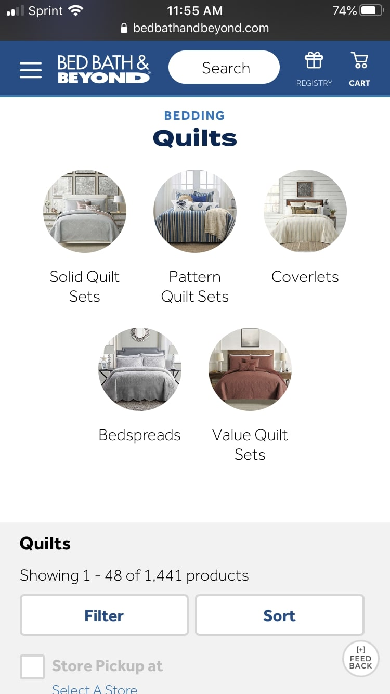
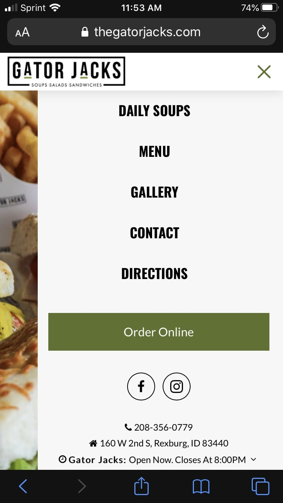
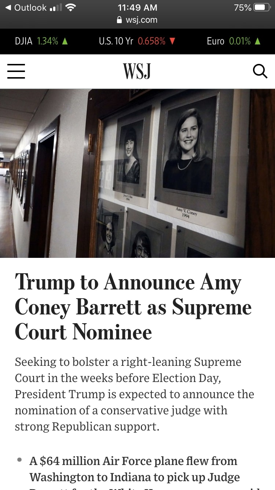

White Space and Clean Design
Bed, Bath, & Beyond
White Space is an important principle in web design. Too much white space could hurt the look of a website, so web designers are challenged with determining where there needs to be white space and where there shouldn't be any. The mobile browser for Bed, Bath, & Beyond is a good example of this. While shopping, users need to be able to distinct from one type of product from another. Here, you can see that the white space allows us to clearly see the different types of quilt options and the user is not overwhelmed by their options.
Hick's Law
Gator Jacks
Hick's law refers to limiting the choices a viewer can make so they are not overwhelmed or confused when they visit a website. Websites can implement this idea by inputting a filter or an accessible menu of some sort. I think a good example of this is the side bar menu for the Gator Jack's website, a local restaurant in Rexburg, ID. When people go to the website of a restaurant, the web designer can safely narrow down what they are looking for, and that is exactly what Gator Jacks did. In the side bar menu, the choices the viewer is limited to are Daily Soups, Menu, Gallery, Contact, Directions, and Online Ordering.
Proximity
Wallstreet Journal
Proximity on a web page creates connections with the different elements displayed. In other words, the proximity of one element to another helps the viewer know that they are relevant or not relevant to each other. I think the Wallstreet Journal website has good proximity on a mobile browser. As soon as I open it up, I can clearly see the front-page article for that day and the picture associated with it. And as you keep scrolling, it is made very clear which title goes with which picture.